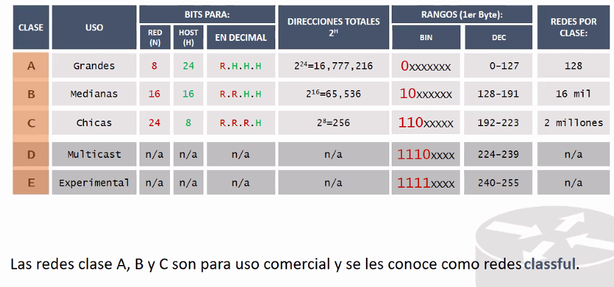

Multicast: Un envio a varios de forma deterministica.
IETF (Internet Engineering Task Force):Son solo para pruebas de seguridad.
2^H es el tamaño de la red.
Todas la redes clase A tienen el primer Bit en cero.
Solo se tienen 127 redes clase A a nivel mundial.
Todas las redes clase B tienen 10
Solo se tienen del 128 al 191.